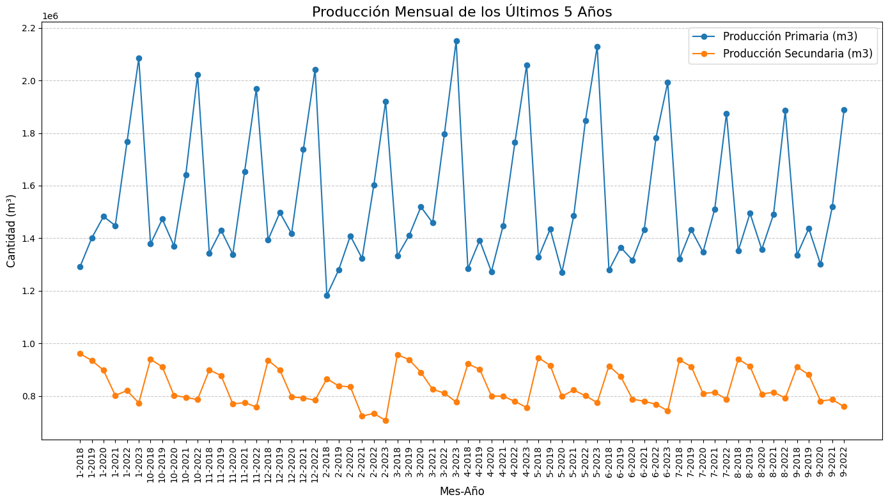
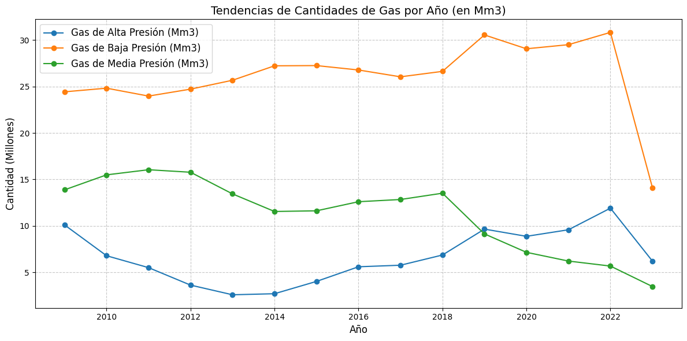
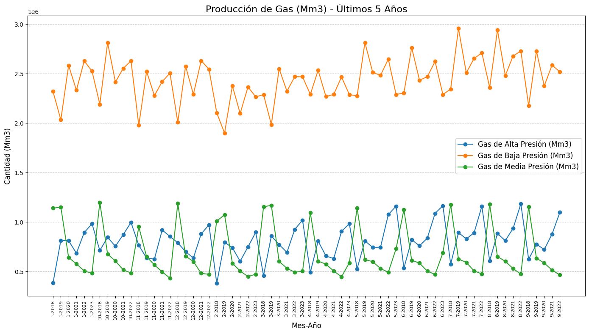

Tendencias Anuales de Producción de Petróleo y Gas en Argentina
Análisis de datos del Ministerio de Energía de la Nación Argentina (1993-2023)
Descripción del dataset
Este análisis se basa en el dataset público de producción de petróleo y gas en Argentina, que contiene información detallada sobre la extracción de hidrocarburos en el país desde 2006 hasta 2023.
Fuente: Datos abiertos del Ministerio de Energía de la Nación Argentina
Indicador
Unidad de medida
Descripción
Producción Primaria y Secundaria
Metros cúbicos (m³)
Volumen de petróleo extraído mensualmente
Gas de Alta, Media y Baja Presión
Miles de metros cúbicos (Mm³)
Volumen de gas natural extraído mensualmente
Producción de Petróleo
Descripción de los datos de petróleo
Los datos del archivo pet.csv muestran las cantidades de producción anual en diversas categorías relacionadas con la industria petrolera. Las métricas seleccionadas para este análisis son:
Producción Primaria (m³): Volumen de extracción directa de petróleo crudo.
Producción Secundaria (m³): Cantidad recuperada mediante técnicas como inyección de agua o gas.
Tendencias Anuales de Producción de Petróleo
El siguiente gráfico ilustra cómo evolucionan las cantidades de producción de petróleo a lo largo de los años:
Interpretación del gráfico
Las tendencias reflejan lo siguiente:
Una posible disminución en la Producción Primaria, lo que podría indicar cambios en las reservas accesibles o en las técnicas utilizadas.
Un aumento en la Producción Secundaria, lo que sugiere la creciente importancia de las técnicas de recuperación secundaria.
Producción Mensual de Petróleo (Últimos 5 Años)
El siguiente gráfico muestra la evolución mensual de la producción primaria y secundaria de petróleo durante los últimos 5 años:

Observaciones sobre la producción de petróleo
La Producción Primaria muestra valores entre 1.2 y 2.2 millones de m³, con picos cíclicos a lo largo del año.
La Producción Secundaria se mantiene más estable, en un rango entre 0.7 y 1.0 millones de m³.
Se observa una clara diferencia entre ambos tipos de producción, siendo la primaria significativamente mayor.
Existen patrones estacionales en la producción, con incrementos sistemáticos en ciertos meses del año.
Tipo de Producción
Rango Típico (m³)
Tendencia Observada
Producción Primaria
1.2 - 2.2 millones
Fluctuante con patrones estacionales
Producción Secundaria
0.7 - 1.0 millones
Relativamente estable con leve tendencia al crecimiento
Producción de Gas Natural
Descripción de los datos de gas
El análisis de la producción de gas natural en Argentina se enfoca en los diferentes tipos según su presión:
Gas de Alta Presión: Extraído de yacimientos con alta presión natural.
Gas de Media Presión: Producido en yacimientos con presión moderada.
Gas de Baja Presión: Obtenido de yacimientos con menor presión o como resultado de procesos de separación.
Tendencias de Cantidades de Gas por Año
Este gráfico presenta la evolución anual de la producción de gas natural según su presión:

Análisis de tendencias de gas
El Gas de Baja Presión es el principal componente de la producción, con valores entre 24 y 30 millones de m³, mostrando un incremento hasta 2021 y una caída pronunciada en 2023.
El Gas de Media Presión presenta una tendencia decreciente desde 2012, pasando de aproximadamente 16 millones de m³ a menos de 5 millones de m³ en 2023.
El Gas de Alta Presión muestra una recuperación desde 2014, después de un período de declive, con un pico en 2022 de aproximadamente 12 millones de m³.
Producción Mensual de Gas (Últimos 5 Años)
Este gráfico detalla la producción mensual de gas por tipo durante los últimos 5 años:

Características de la producción mensual de gas
El Gas de Baja Presión domina la producción, con valores entre 1.9 y 3.0 millones de m³ mensuales.
El Gas de Alta Presión y el Gas de Media Presión muestran patrones cíclicos alternados, sugiriendo una posible correlación inversa entre ambos.
Se observan incrementos en la producción de Gas de Baja Presión en los últimos años, con picos más pronunciados y frecuentes.
Tipo de Gas
Rango Típico (Mm³)
Tendencia Observada
Gas de Baja Presión
1.9 - 3.0 millones
Dominante con tendencia creciente y picos estacionales
Gas de Media Presión
0.3 - 1.5 millones
Decreciente con oscilaciones periódicas
Gas de Alta Presión
0.5 - 1.2 millones
Recuperación desde 2014 con tendencia al alza
Conclusiones Generales
La producción de petróleo muestra una clara predominancia de la extracción primaria sobre la secundaria, aunque esta última presenta mayor estabilidad.
En la producción de gas, el gas de baja presión representa el mayor volumen de producción, mientras que la media presión ha mostrado una tendencia decreciente significativa.
Ambos recursos muestran patrones estacionales claros, con variaciones cíclicas que podrían estar relacionadas con factores climáticos, demanda o condiciones operativas.
Este análisis se basa en datos públicos del Ministerio de Energía de la Nación Argentina. Los gráficos fueron generados utilizando Python con las bibliotecas Pandas y Matplotlib para el procesamiento y visualización de datos.